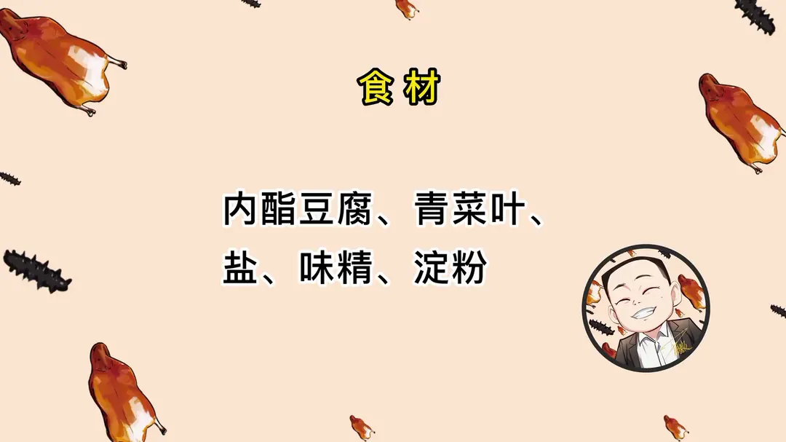
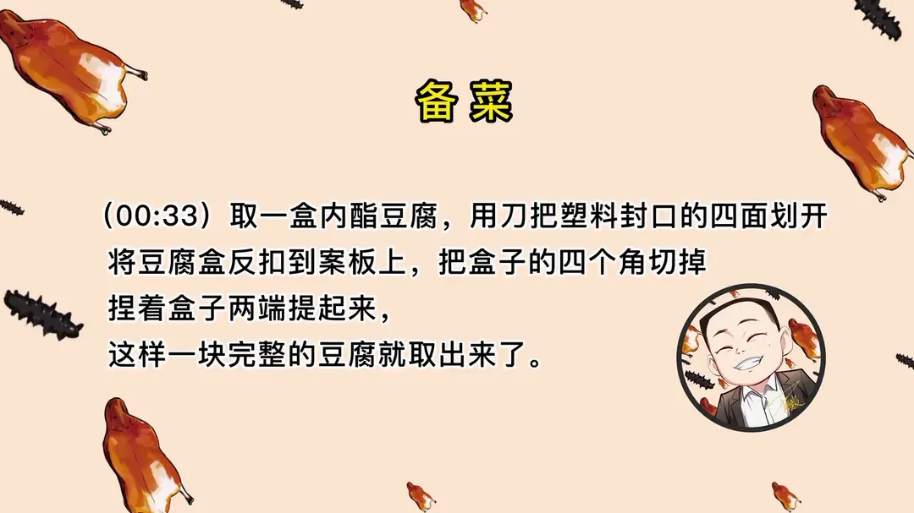
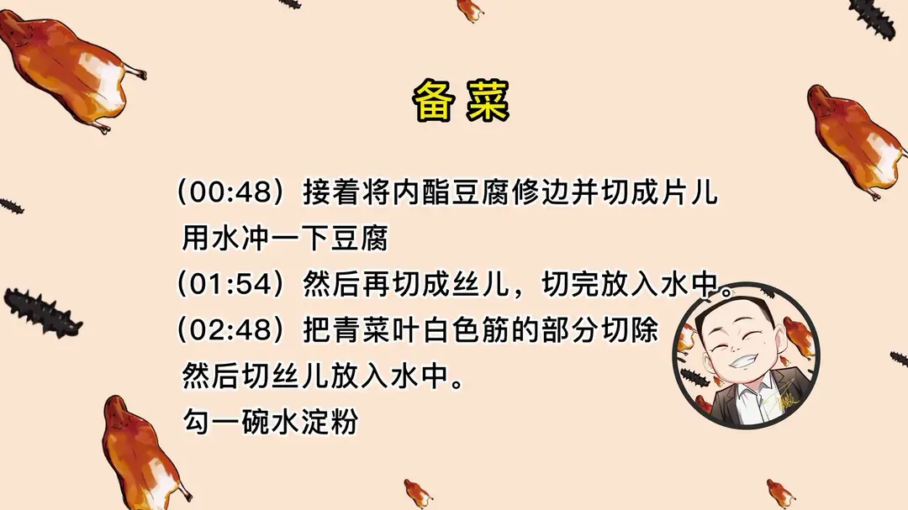
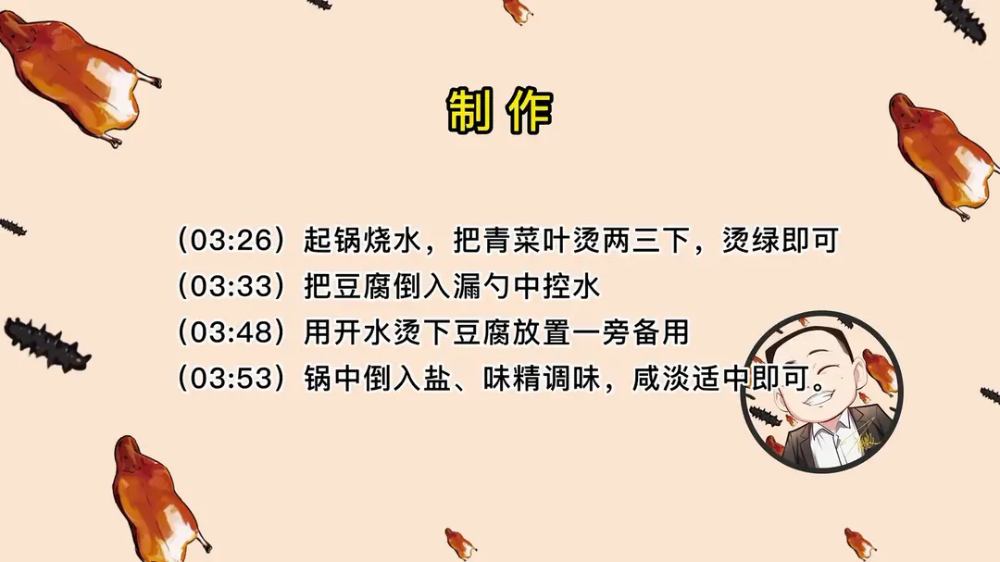
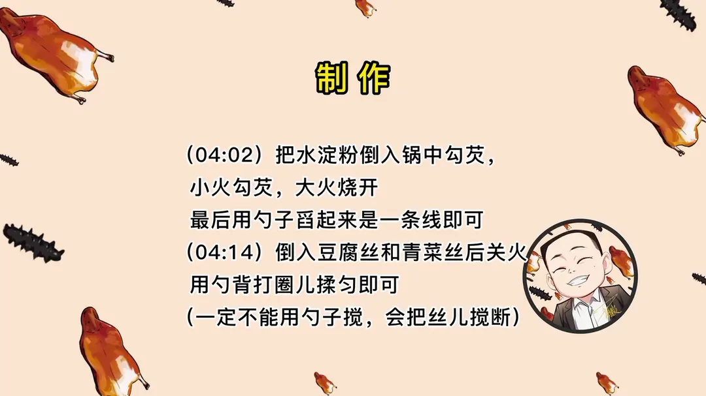

文思豆腐
隋卞一做。一盒内酯豆腐切细丝，最难是完整脱模，汆烫后小火勾薄芡，只能勺背打圈推匀。
原视频：https://www.bilibili.com/video/BV1NM411a7ty
食材
内酯豆腐、青菜叶、盐 等 5 样
| 类别 | 用料 | 用量 |
|---|---|---|
| 主料 | 内酯豆腐 | 1 盒 |
| 主料 | 青菜叶 | 适量 |
| 调味 | 盐 | 适量 |
| 调味 | 味精 | 适量 |
| 勾芡 | 淀粉（水淀粉） | 1 碗 |
步骤
- 脱模：取一盒内酯豆腐，用刀把塑料封口的四面划开，将豆腐盒反扣到案板上，把盒子的四个角切掉，捏着盒子两端提起来，这样一块完整的豆腐就取出来了。
- 切丝：接着将内酯豆腐修边并切成片儿，用水冲一下豆腐，然后再切成丝儿，切完放入水中。
- 切青菜：把青菜叶白色筋的部分切除，然后切丝儿放入水中；勾一碗水淀粉。
- 烫菜：起锅烧水，把青菜叶烫两三下，烫绿即可。
- 烫豆腐：把豆腐倒入漏勺中控水，用开水烫下豆腐放置一旁备用。
- 调味：锅中倒入盐、味精调味，咸淡适中即可。
- 勾芡：把水淀粉倒入锅中勾芡，小火勾芡、大火烧开，最后用勺子舀起来是一条线即可。
- 下丝：倒入豆腐丝和青菜丝后关火，用勺背打圈儿揉匀即可（一定不能用勺子搅，会把丝儿搅断）。
小贴士
- 完整脱模这一步很重要，90% 的人都会失败：四角切掉后捏住盒子两端提起，才能取出整块豆腐。
- 下豆腐丝后一定不能用勺子搅，只能用勺背打圈揉匀，否则丝儿会断。
讲解要点
难度：★★★★★（刀工是硬门槛，切丝粗细不匀就做不成；勾芡也极看手感）
为什么这么做
- 用刀沿盒盖边线划开、四角切掉再提起来：内酯豆腐太嫩，直接从盒里倒出来会碎；沿边线划开、四角去掉，盒子和豆腐之间就松开了，捏着两端提起才能拿到一整块。
- 先修边、再从中间一剖为二：盒装豆腐太厚，整块切完下半截容易碎；切到二分之一处从中间断开，两块都好操作，也好切丝。
- 刀上沾水再切：嫩豆腐含水量高，刀干会粘，沾水后刀面滑顺，切口才齐。
- 青菜要卷起来切：叶子卷起来受力集中，才好切出和豆腐一样细的丝。
- 青菜只烫两三下：丝切得很细，烫到变绿就够，久烫就软塌。
- 用开水冲豆腐丝、不用下锅煮：豆腐丝太嫩，入锅就碎，浇一遍开水只为升温度、去豆腥。
- 勾芡先小火再大火烧开、拉起呈一条线：芡稀了拖不住丝，芡浓了豆腐在汤里揉不开；小火勾不会结块，再烧开才能判断浓稠。
- 关火后用勺背打圈揉匀：勺背是面、勺沿是刃，用勺子搅会把丝切断，勺背打圈才能把丝一圈圈揉开。
容易翻车
- 脱模时刀没划到位，一提就散。
- 豆腐切得太厚，切丝时下刀不稳，最后粗细不匀。
- 芡太稀托不住丝，全沉在锅底；芡太浓，丝揉不开成一坨。
- 关火前用勺子搅了两下，一锅全碎成豆腐花。
热评补充
- 有网友总结得挺准：这期食材简单到只差一碗豆腐，但要真做出来，喊妈也不好使——难点不在料，在刀工和勾芡。
原片尾卡





原片文案
AI 字幕校准稿
这是豆腐，这是粗线，这是细线——你看，这真的是豆腐，豆腐比线还细，这就是淮扬名菜文思豆腐。中国菜里面体现刀工的菜很多，按难度来排名的话，文思豆腐绝对排在前几名。今天多方位、多角度地来给你们切一遍，让你们看看文思豆腐到底应该怎么切。
需要的原料很简单，就一盒嫩豆腐。顺着盒盖沿着边线给它拉一下，然后把它接下来翻过来，四个角贴个底、再拉到，底就不要了，往上一提就开了。接下来都是难点，你们要仔细看：修个边儿。
这个豆腐太高了，切完之后它就容易特别碎，所以我们要在中间的二分之一处给它砍断。刀平推，这也非常考验技术，推不好就变成一边大一边小，一边能切一边不能切。刀上沾点水。
然后上边弄上点水，准备开始。切成的豆腐直接放在水里就行了，切成这样就可以了。这是豆腐，这是粗线，这是细线——你看，这真的是豆腐。
油菜叶把叶子卷一下，这样更方便切，切成和豆腐一样细就可以了。文思豆腐和松茸菊花豆腐哪个难？按南方刀工刀法的话不好比。很多传统菜，原料并不是很复杂，但是刀法、刀工能让人一看就望而却步。
下一步我们就是上火制作。起锅烧水，把这个青菜叶子烫一下，变绿就行了，因为我们切得很细，烫两三下就行。然后把豆腐倒出来，控干水——在老饭骨我做了一个鸡汤版的，今儿个咱们做一个没有鸡汤的青春版。把水烧开之后，往豆腐上浇一浇，让它稍微升一下温度，然后锅里边赶紧调味，来点谷氨酸钠、再来点氯化钠。
最难的两步就是切豆腐和勾芡。准备一碗水淀粉，勾不好，您这个豆腐也打不开。拿不准可以用小火勾，勾完之后让它大火再烧开，这样就可以了，勺子一拉是一条线。然后把豆腐赶紧倒进去，把菜丝倒进去，这时候要把火关了，然后用勺子来揉，就会把里面的丝全都揉开；要是拿勺子搅，它就全都给搅碎了。
好了，这就是淮扬名菜文思豆腐。又到开饭时间了，真是惊叹这个刀工。哇，入口即化，这手法太有魔力了，真是熟能生巧。味道咸鲜，有豆腐的清香，菜叶也是正经的咸鲜。
其实这个菜就两个难点：一个是刀工，第二是勾芡。勾太稀了拖不住豆腐，勾芡浓了豆腐在汤里面揉不开。
切豆腐的注意事项：两只手一定要配合好，一个拿刀、一个是顶刀，如果你技术好可以不顶，反正我技术不好，我必须顶着，手得稳，往后移得一气呵成，腰马合一，前腿弓、后腿绷，姿势得弄好，中间不能停。至于匀速到什么程度，你得慢慢去掌握。